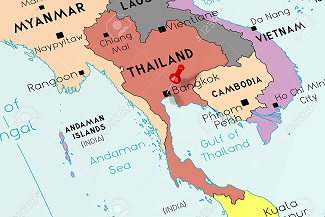

WELCOME TO PARADISE!

Welcome to Bangkok, an enchanting metropolis that embraces you with its vibrant contrasts and multifaceted charm.
As the beating heart of Thailand, Bangkok is a city where tradition and modernity coexist in harmonious chaos.
From its humble origins as a trading post to its current status as a global hub,
Bangkok's journey through time has shaped its unique character.
Immerse yourself in the city's rich history, where the echoes of ancient dynasties still resonate through magnificent temples
like the Grand Palace and Wat Arun. As you explore the bustling streets, you'll witness the interplay of ornate traditional
architecture and sleek modern structures that define Bangkok's skyline.
Indulge your senses in the bustling markets that line its thoroughfares, from the legendary
Chatuchak Weekend Market to the aromatic street food stalls that tempt you with an array of tantalizing flavors.
The city's culinary scene mirrors its diversity, where Michelin-starred restaurants and humble food carts sit side by side,
offering a culinary adventure that reflects the city's eclectic spirit.
Beyond its cultural tapestry, Bangkok is a center of commerce and innovation. Gleaming shopping malls and bustling commercial
districts stand as a testament to its economic prowess, while its burgeoning tech industry and creative initiatives
signify a city at the forefront of change.
While Bangkok's modern face is captivating, it hasn't escaped the challenges of progress.Political shifts and societal
changes have shaped its recent history, leading to a city that grapples with its identity as it navigates the currents
of a changing world.
As you traverse its intricate network of roads, alleys, and waterways, you'll find
that Bangkok is a city of surprises. From traditional long-tail boats navigating the Chao
Phraya River to the throngs of tuk-tuks zipping through the urban
maze, transportation in this city is an adventure in itself.
So, whether you're marveling at the intricate craftsmanship of ancient temples, exploring the nooks and crannies of its sprawling
markets, or reveling in the modern innovations that define its present, Bangkok invites you to uncover its layers,
embracing its contradictions and embracing its spirit of perpetual transformation.
Bangkok is located close to the Gulf of Thailand, along the banks of the Chao Phraya River. With a reported population of 6 million,
Bangkok is the 22nd most populous city in the world, however it's likely the number is higher.
The Chao Phraya River runs through the city, and a network of canals, or "khlongs," once earned Bangkok the nickname "Venice of the East." However, many of these canals have been filled in and converted into roads over the years to accommodate urban expansion. The city's strategic location has contributed to its growth as a major economic, cultural, and political hub in Southeast Asia.
Bangkok's central location within Thailand makes it a convenient hub for transportation. It has an international airport, Suvarnabhumi Airport, which connects the city to destinations all over the world. Additionally, the city's extensive road and rail networks facilitate travel within the country.
Originally, Bangkok relied on the Chao Phraya River and an interconnected network of canals for its transportation system. .jpeg) Nevertheless, with the introduction of automobiles, numerous canals were filled in to create roads. As a result, water travel primarily takes place along the Chao Phraya River. Navigating the urban expanse of Bangkok poses a challenge. The city lacks a cohesive plan in its development, resulting in often disorderly growth.
Nevertheless, with the introduction of automobiles, numerous canals were filled in to create roads. As a result, water travel primarily takes place along the Chao Phraya River. Navigating the urban expanse of Bangkok poses a challenge. The city lacks a cohesive plan in its development, resulting in often disorderly growth.
The urban sprawl stretches alongside the Chao Phraya River, with roads and alleys branching out in various directions. Cutting through the city center is Rama I Road, which eventually transforms into Sukhumvit Road – an area replete with hotels, eateries, and entertainment spots. When it
comes to getting around, the majority of visitors in the city opt for taxis, river taxis, or tuk-tuks (affordable, open-air, three-wheeled taxis).
Bangkok's transportation system was characterized by its continued expansion and modernization. The BTS Skytrain and MRT subway systems remained
popular choices for getting around the city efficiently, particularly for avoiding traffic congestion. These systems connected key commercial and residential
areas, making them convenient for both locals and tourists.
Tuk-tuks, taxis, and motorbike taxis continued to be widely used for short-distance travel,
offering flexibility and accessibility.
However, rideshare apps like Grab also gained popularity, providing an alternative to traditional taxis and often offering more predictable pricing.
The city's extensive bus network remained an economical way to traverse the city, albeit with occasional challenges related to traffic.The Chao
Phraya River and its network of ferries and boats remained an important mode of transport for those living along the riverbanks and for tourists exploring various attractions.